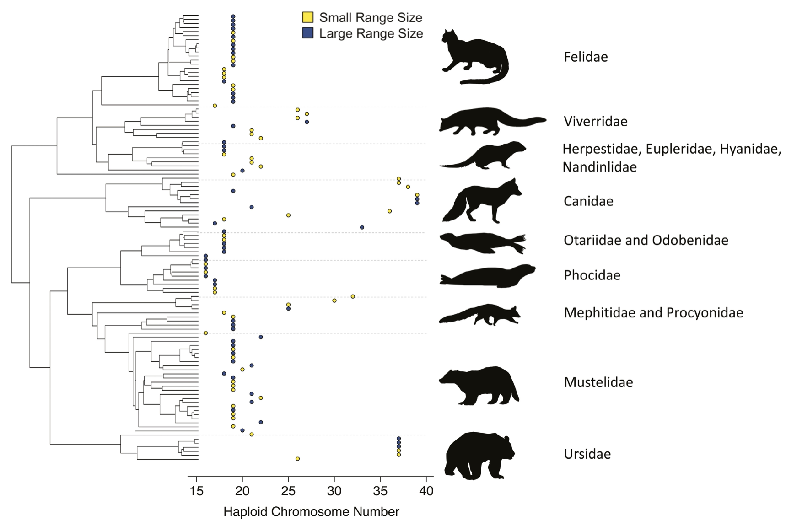
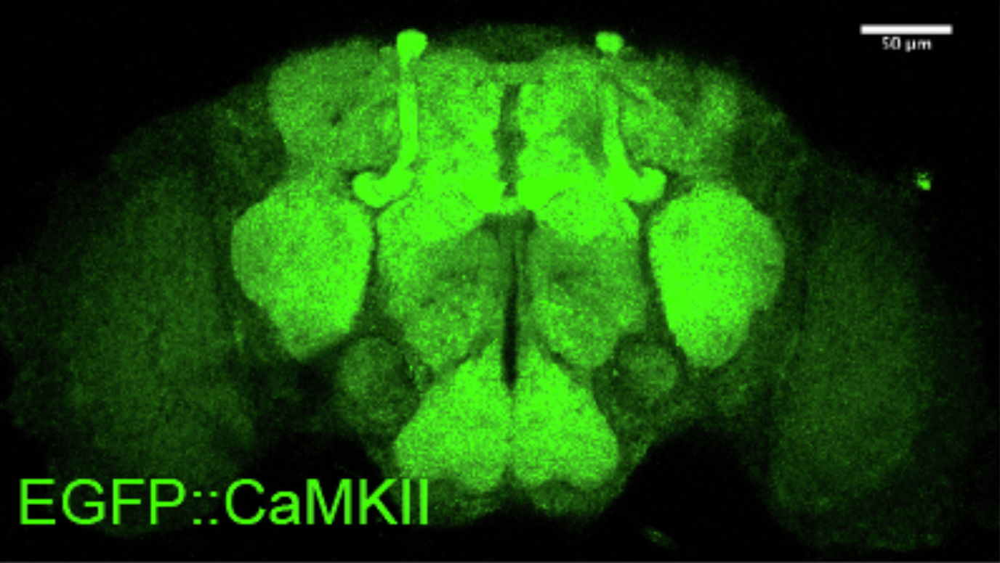

About
Hi, I’m Your Name. I am interested in engineering, software and data systems, and biological research. I enjoy working at the intersection of wet lab science and computational tools to solve operational problems and improve patient outcomes. This website contains my projects, research interests, resume, and contact information.
Research
My research spans computational biology, neurogenetics, and tumor and nanoparticle dynamics. I'm interested in building reproducible, data-driven systems that connect biological research with engineering and analytics.

Chromosome Number Evolution in Carnivora
This project investigated how range size and genetic drift influence chromosome number evolution across Carnivora. I built R-based workflows to clean, integrate, and analyze comparative genomics datasets, including chromosome counts, GBIF species occurrence data, and phylogenetic trees. The analysis used phylogenetic modeling and statistical methods to evaluate whether species with smaller range sizes showed elevated rates of chromosome fusions and fissions. Built reproducible R workflows to clean, integrate, and analyze comparative genomics datasets across genomic, GBIF occurrence, chromosome count, and phylogenetic sources. Applied phylogenetic modeling and Bayesian statistical analysis to evaluate how range size and genetic drift influence chromosome fusions and fissions in Carnivora. This work contributed computational analysis to a peer-reviewed publication in the Journal of Heredity.
Paper
Neurogenetics Assay Development & Sequencing Data Analysis
Conducted neurogenetics research across Mexican cavefish and Drosophila model systems, combining behavioral assays, brain dissections, tissue mounting, microscopy, immunofluorescence, and quantitative data analysis. Designed and optimized Drosophila olfactory behavioral assays to study neurodegeneration-associated phenotypes, including an agar-based assay modification to reduce locomotor bias and improve experimental interpretability.
Projects
Clinical Genomics Workflow Monitoring
Let's see if this thing works. Describe what the project does, what tools you used, and what you learned.
Tools: Python, JavaScript, HTML, CSS
GitHub LinkAnother Project
Describe another project here. For job applications, focus on impact: what did you build, why, and what was the result?
Tools: Python, React, SQL
GitHub LinkResume
You can view my resume here:
Open ResumeContact
Email: abhi02@utexas.edu
GitHub: github.com/abhiarekere
LinkedIn: linkedin.com/in/abhimanyu-d-arekere